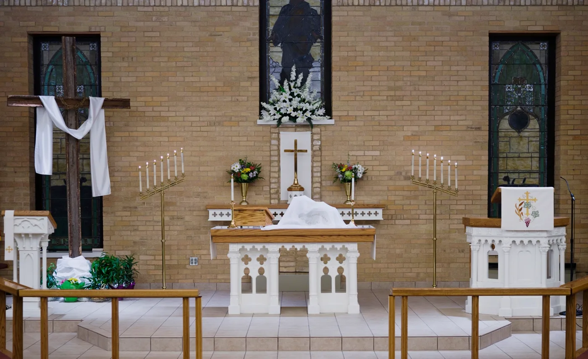
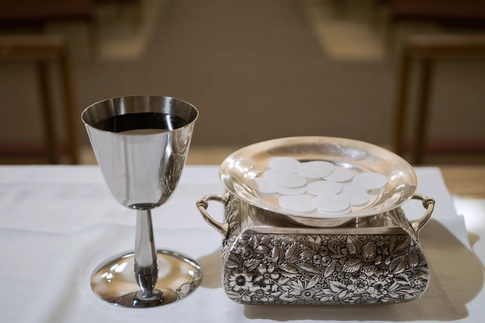

Use Your Gifts
Serve Our Community
Find Your Place to Serve
Let us consider it a privilege and a responsibility to have the opportunity to serve God within Christ Church and beyond. Jesus has sought to use the gifts that God has placed in his hand at all times.
Ministry Team
Greeting & Ushers
To reflect Christ's hospitality by offering a warm welcome and orderly presence that helps every person, from the parking lot to the sanctuary, encounter God in worship. Like the father in the parable of the Prodigal Son, greeters and ushers actively welcome and ensure everyone who walks through our doors feels seen and valued.

Ministry Team
Altar Guild
To prepare the sanctuary for worship with reverence and devotion — caring for sacred vessels, linens, vestments, and flowers — ensuring the altar is a worthy place for the Eucharist.
“Ascribe to the Lord the honor due his Name; bring offerings and come into his courts.”— Psalm 96:8

Ministry Team
Communion
To serve the Lord's Table with reverence, care, and hospitality, helping the congregation encounter Christ's grace through Holy Communion. Ministers of Holy Communion assist in distributing the Body and Blood of Christ, serving with devotion to ensure orderly, respectful communion.
Ministry Team
Lay Readers
To faithfully proclaim the Word of God with clarity, reverence, and understanding, so that Scripture comes alive and strengthens the faith of the congregation.
“Devote yourself to the public reading of Scripture, to exhortation, to teaching.”— 1 Timothy 4:13
Ministry Team
Nursery
To provide a safe, loving, and nurturing environment for our youngest children, allowing parents to worship with peace of mind while introducing children to God's love through care, play, and simple Bible stories.
Ministry Team
Musical Worship
To lead the congregation in Christ-centered worship through music, fostering participation and helping create a meaningful, God-glorifying environment. We point to Christ and not to ourselves — worship is never about performance or personal glory. Skill matters, but humility matters more.
“Oh come, let us sing to the Lord; let us make a joyful noise to the rock of our salvation!”— Psalm 95:1–2
Ministry Team
Technology & Social Media
To serve and support worship through technology and social media, helping create a clear, distraction-free experience while extending the message of Christ to our community and beyond. Technology is a tool to facilitate the Word of God, not for entertainment.
“So, whether you eat or drink, or whatever you do, do all to the glory of God.”— 1 Corinthians 10:31
Ministry Team
Safety
To provide a safe and secure environment for worship, allowing the congregation to gather in peace while caring for the well-being of all who enter. Safety Team members serve as protective watchmen — trained to handle emergencies and safeguard our clergy, congregation, and church family so that worship can continue undisturbed.
“We prayed to our God and posted a guard day and night to meet this threat.”— Nehemiah 4:9
Ready to Serve?
Reach out and let us know which ministry team interests you. We will help you find the right fit.
Get Involved